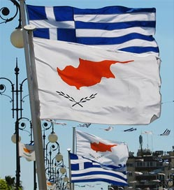

Republic of Cyprus Flag and other Flags in Cyprus
Greek flag in Cyprus

Celebrating a Greek National holiday The 82% of the Cypriot population have Greek ethnic background and they speak the Greek language. Cyprus has been a British colony until 1960 and until then, for the Greek Cypriots, liberation and decolonization meant Cyprus becoming part of the Greek Republic. Although this did not happen, and Cyprus became an independent country instead, most Greek Cypriots still closely associate themselves with Greece and the Greek flag. For this reason the Greek flag is flown during many national and other events in Cyprus. It can also be found flying over schools, churches, military camps and may other places. According to the constitution, the Republic of Cyprus authorities as well as communal authorities and institutions have the right to fly on holidays together with the flag of the Republic of Cyprus either the Greek or the Turkish flag at the same time. The 1960 constitution also gave the right to Greece to maintain in Cyprus a contingent made by 950 Greek military officers. Greek flag in Cyprus in the news
|